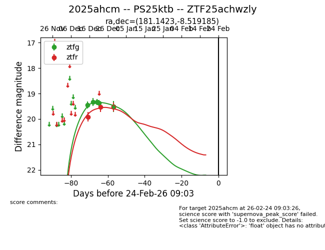
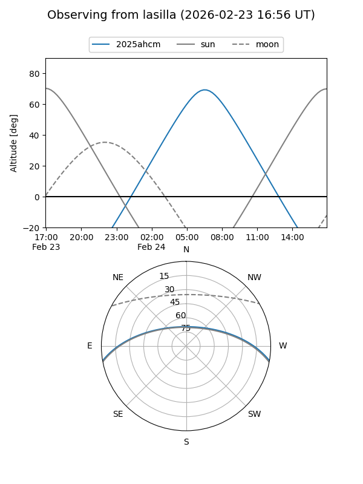
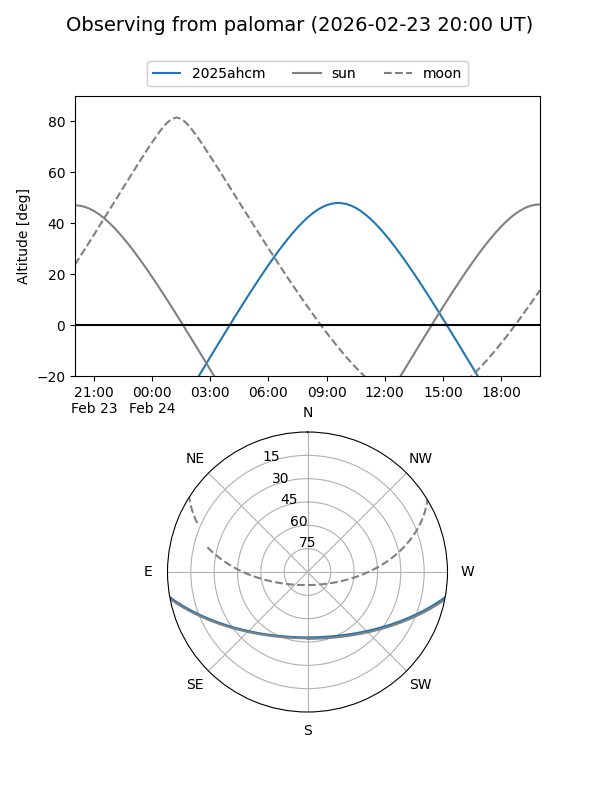

2025ahcm
Target 2025ahcm at 2025-12-31 18:00
Aliases and brokers:
FINK: link
Lasair: link
ALeRCE: link
TNS: link
YSE: link
alt names
ZTF25achwzly (ztf,fink_ztf)
2025ahcm (tns,yse)
PS25ktb (panstarrs)
Coordinates:
equatorial (ra, dec) = 181.1423,-8.51919
equatorial (HMS+DMS) = 12:04:34.15,-08:31:09.07
galactic (l, b) = (283.6285,+52.58707)
Flags:
Photometry:
last ztfg=19.52, ztfr=19.52
5 ztfg, 2 ztfr detections
Lightcurve

Visibility


Additional plots